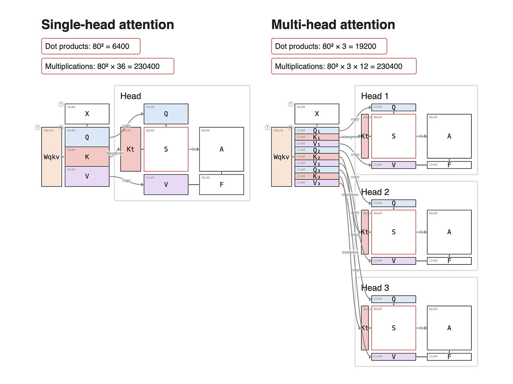

Attention 기본¶
Attention은 각 token이 sequence 안의 다른 token을 얼마나 참고할지 계산하는 방법입니다.
Q, K, V¶
- Query: 지금 정보를 찾는 token의 관점
- Key: 비교 대상 token의 특징
- Value: 실제로 가져올 정보
Attention score = Query와 Key의 유사도
Output = score로 Value를 가중합한 결과
Attention 유형¶

- Encoder self-attention: 입력 token끼리 서로를 참고합니다.
- Masked decoder self-attention: 미래 token을 보지 못하게 막고 이전 token만 참고합니다.
- Encoder-decoder attention: decoder의 Query가 encoder의 Key/Value를 참고합니다.
Hidden Size, Head Dim, Num Attention Heads¶
hidden_size는 token 하나를 표현하는 vector 길이입니다. num_attention_heads는 attention을 몇 개의 head로 나누는지, head_dim은 head 하나가 담당하는 차원입니다.
head_dim = hidden_size / num_attention_heads
예시:
hidden_size = 4096
num_attention_heads = 32
head_dim = 128
Multi-head Attention¶
여러 head가 서로 다른 관계 패턴을 병렬로 학습합니다.

Grouped Query Attention¶
GQA는 여러 query head가 더 적은 수의 key/value head를 공유하도록 묶는 방식입니다. KV cache를 줄이면서 MQA보다 표현력을 유지하기 위한 절충안입니다.
| 방식 | Query head | Key/Value head | 장점 | 단점 |
|---|---|---|---|---|
| MHA | 많음 | Query와 같음 | 표현력 좋음 | KV cache 큼 |
| MQA | 많음 | 1개 | KV cache 작음 | 표현력 손실 가능 |
| GQA | 많음 | 몇 개 group | 메모리와 성능 균형 | group 수 선택 필요 |